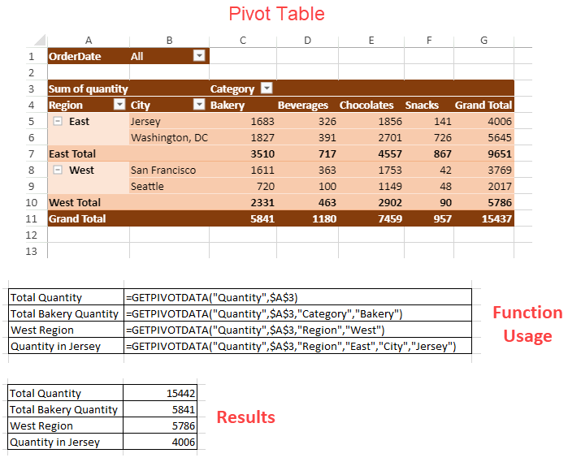

This function returns visible data from a Pivot Table. It queries the pivot table and gets the specific data based on the pivot table structure, instead of cell references. The main advantage of using this function is that it ensures that the correct data is returned, even if the pivot table layout is changed.
Syntax
=GETPIVOTDATA(data_field, pivot_table, [field1, item1, field2, item2], ...)
Arguments
This function has the following arguments:
| Arguments | Descriptions |
| data_field | The name of the PivotTable field that contains the data you want to retrieve. This needs to be in double quotes. |
| pivot_table | A reference to any cell, range of cells, or named range of cells in a PivotTable. This information is used to determine which PivotTable contains the data that you want to retrieve. |
| field1, item1, field2, item2.. | [Optional] Up to 126 pairs of field names and item names that describe the data that you want to retrieve. The pairs can be in any order. |
Usage
You can enter the GETPIVOTDATA function by using = (the equal sign) in the cell in which you want to return the value. You can also use this function with other functions.
Remarks
The following points hold true while working with GETPIVOTTABLE function:
- #REF! error value occurs in the following cases:
- If the given pivot_table reference is not related to the pivot table.
- If an invalid field for the data_field, [field], or [item] arguments is provided.
- If the arguments do not describe a visible field, or if they include a report filter in which the filtered data is not displayed.
- When there is a sigma value, the data_field will contain calc type, otherwise, it will use the field name only.
Return value
Returns visible data from a pivot table.
Examples
The following images show the usage of GETPIVOTDATA function.

The following sample code show the usage of GETPIVOTDATA function.
| C# |
Copy Code
|
|---|---|
$(document).ready(function () {
// initializing Spread
var spread = new GC.Spread.Sheets.Workbook(document.getElementById('ss'), { sheetCount: 2 });
spread.suspendPaint();
// get sheets
var pivotLayoutSheet = spread.getSheet(0);
var dataSourceSheet = spread.getSheet(1);
// set sheet name
pivotLayoutSheet.name("PivotLayout");
dataSourceSheet.name("DataSource");
// set row count
dataSourceSheet.setRowCount(245);
// set datasource
dataSourceSheet.setArray(0, 0, pivotDB_UseCase);
// add table to dataSourceSheet
dataSourceSheet.tables.add('tableSales', 0, 0, 245, 8);
spread.resumePaint();
// initialize pivottable
initPivotTable(pivotLayoutSheet);
// auto fit columns in both the sheets
autoFit(pivotLayoutSheet);
autoFit(dataSourceSheet);
});
function initPivotTable(sheet) {
// add pivottable
var myPivotTable = sheet.pivotTables.add("myPivotTable", "tableSales", 0, 0, GC.Spread.Pivot.PivotTableLayoutType.tabular, GC.Spread.Pivot.PivotTableThemes.dark3);
myPivotTable.suspendLayout();
// show rowHeader and columnHeader for PivotTable
myPivotTable.options.showRowHeader = true;
myPivotTable.options.showColumnHeader = true;
// add column fields
myPivotTable.add("Category", "Category", GC.Spread.Pivot.PivotTableFieldType.columnField);
// add row fields
myPivotTable.add("Region", "Region", GC.Spread.Pivot.PivotTableFieldType.rowField);
myPivotTable.add("City", "City", GC.Spread.Pivot.PivotTableFieldType.rowField);
// add value field with SubtotalType Sum
myPivotTable.add("Quantity", "Sum of quantity", GC.Spread.Pivot.PivotTableFieldType.valueField, GC.Pivot.SubtotalType.sum);
// add filter field
myPivotTable.add("OrderDate", "OrderDate", GC.Spread.Pivot.PivotTableFieldType.filterField);
var formula1 = '=GETPIVOTDATA("Quantity",$A$3)';
sheet.setValue(3, 10, 'Total Quantity');
sheet.setStyle(3, 10, 'introSec');
sheet.setFormula(3, 11, formula1);
var formula2 = '=GETPIVOTDATA("Quantity",$A$3,"Category","Bakery")';
sheet.setValue(4, 10, 'Total Bakery Quantity');
sheet.setStyle(4, 10, 'introSec');
sheet.setFormula(4, 11, formula2);
var formula3 = '=GETPIVOTDATA("Quantity",$A$3,"Region","West")';
sheet.setValue(5, 10, 'West Region');
sheet.setStyle(5, 10, 'introSec');
sheet.setFormula(5, 11, formula3);
var formula4 = '=GETPIVOTDATA("Quantity",$A$3,"Region","East","City","Jersey")';
sheet.setValue(6, 10, 'Quantity in Jersey');
sheet.setStyle(6, 10, 'introSec');
sheet.setFormula(6, 11, formula4);
myPivotTable.resumeLayout();
return myPivotTable;
}
function autoFit(sheet) {
// auto fit columns
let columnCount = sheet.getColumnCount();
for (let i = 0; i < columnCount; i++) {
sheet.autoFitColumn(i);
}
}
|
|
The GETPIVOTDATA function also supports spilling, which means, it can populate multiple cells with its results. However, the allowDynamicArray property should be set to true to observe the spilling results. The below image shows a pivot table which will be used to extract some meaningful results using GETPIVOTDATA function.

The below image shows the output when GETPIVOTDATA function is used in the above pivot table and the result is spilled to multiple cells.

The following sample code show the usage of GETPIVOTDATA function to get results which spill to multiple cells.
| JavaScript |
Copy Code
|
|---|---|
function setGetPivotDataFunction(sheet) { spread.options.allowDynamicArray = true; var formula = '=GETPIVOTDATA("Sum of quantity",$B$2,"City",{"Jersey";"San Francisco";"Seattle";"Washington, DC"},"Category",C11:C14,"Qt",E3:F3)'; sheet.setStyle(1, 9, 'introSec'); sheet.addSpan(1, 9, 2, 8, GC.Spread.Sheets.SheetArea.viewport); sheet.setValue(1, 9, 'Returns the spill range of total Bakery, Beverages, Chocolates and Snacks quantity sold in Jersey, San Francisco, Seattle and Washington, DC respectively in the Qtr2 & Qtr3'); sheet.getCell(1, 9).wordWrap(true); sheet.setStyle(4, 9, 'formula'); sheet.addSpan(4, 9, 2, 8, GC.Spread.Sheets.SheetArea.viewport); sheet.getCell(4, 9).wordWrap(true); sheet.setValue(4, 9, formula); sheet.setFormula(7, 9, formula); } |
|